01 / Germany
Customer Strategy & Analytics
Social-Media-Based Customer Strategy
WFI – Ingolstadt School of Management
Method · MVP · Action Learning
Tools · Power BI, Power Query, DAX
Outcome · Applied Master's thesis, Grade 1.0
Marketing Intelligence
Growth
Bridging Performance Data,
Generative AI, and Creative
Growth Strategy
Double-Degree Master’s
Graduate
Ingolstadt / Munich, Germany
Marketing Analytics · Customer Journey · Business Intelligence · Power BI
Generative AI · AI-Assisted Content · Visual Design · Product Photography
Ingolstadt - GermanyToulouse - FranceDhaka - Bangladesh
My academic journey spans France, Germany, and Bangladesh bringing together business, marketing, innovation, customer experience, and digital technology.
Beginning with a BBA in Marketing & International Business and an MBA in Marketing in Dhaka, I built a strong foundation in business and marketing before expanding internationally through my French–German Double Master’s studies in International Marketing of Innovation and Digital Customer Experience & Service Design.
Across these programs, project-based learning allowed me to explore how markets, customers, technology, creativity, and data come together to solve real business challenges.
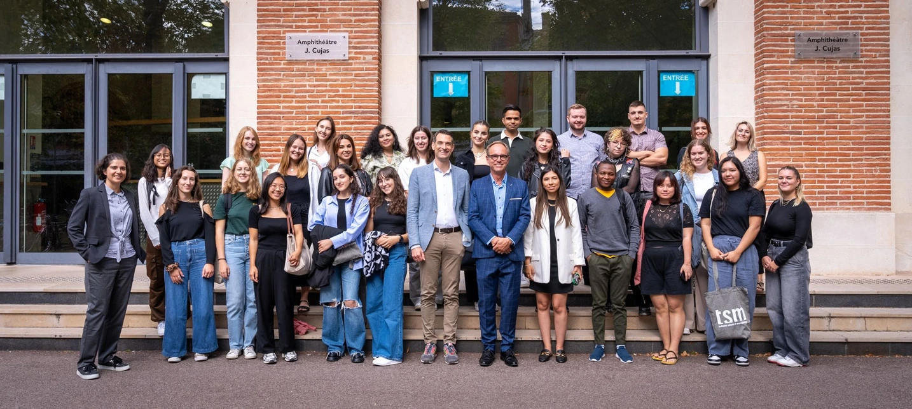
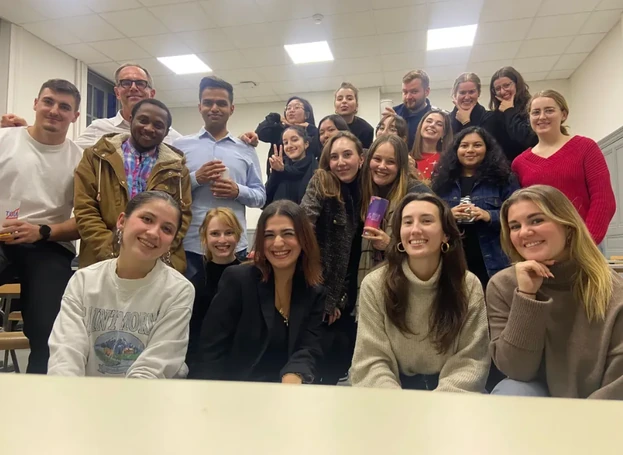
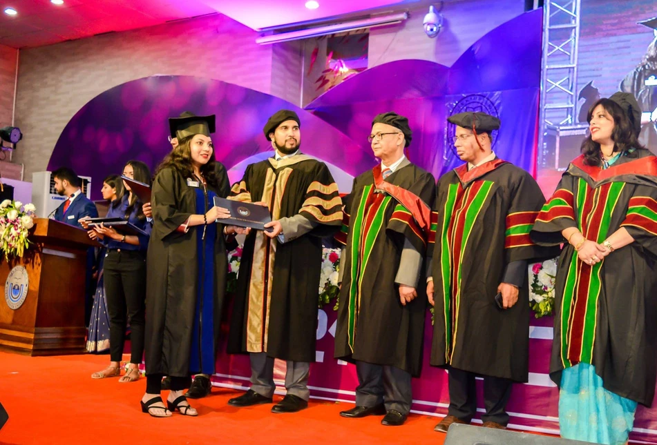
Academic ResearchAnalyticsConsumer BehaviorAI Agent
01 / Germany
WFI – Ingolstadt School of Management
Method · MVP · Action Learning
Tools · Power BI, Power Query, DAX
Outcome · Applied Master's thesis, Grade 1.0
02 / France
Toulouse School of Management
Framework · UTAUT2
Focus · Consumer acceptance of ChatGPT as a grocery shopping assistant
Outcome · Master's research, Grade 1.3
WFI – Ingolstadt School of Management - GermanyPower BIPower QueryDAXGoogle Sheets
Action Learning approach— the research combined business problem identification, iterative development and testing of tracking solutions, and marketing performance analysis. Through campaign data, customer interactions, and Power BI dashboards, the study examined how marketing insights could support strategic decision-making, improve performance visibility, and inform future growth strategies.
Academic outcome: Applied Master's Thesis · Grade 1.0
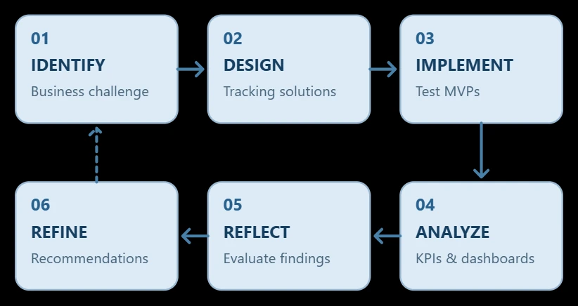
TOULOUSE SCHOOL OF MANAGEMENT - FRANCEChatGPTAI AdoptionConsumer ResearchUTAUT2
Research focus: This research explored consumer acceptance of ChatGPT as a grocery-shopping assistant, examining how perceived usefulness, ease of use, social presence, trust, wellbeing, and risk relate to intention to use.
The conceptual framework also incorporated facilitating conditions and consumer characteristics to investigate AI adoption in a grocery-shopping context.
Academic outcome: Master's research · Grade 1.3
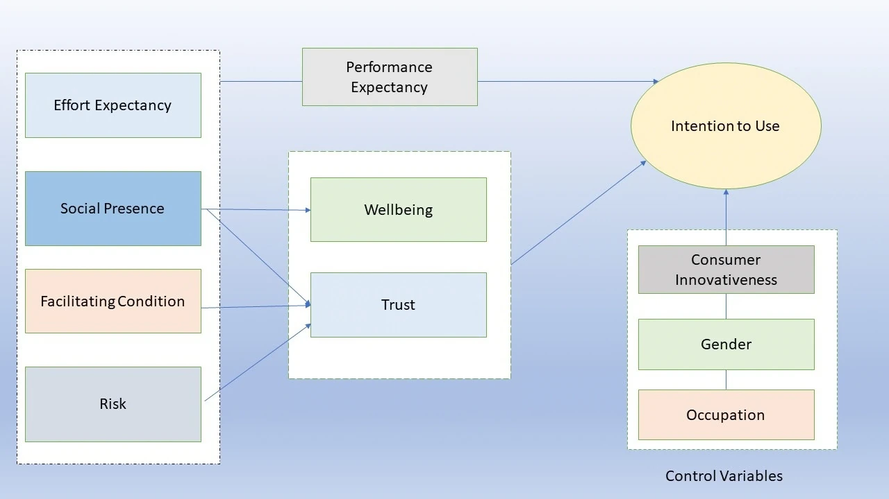
Academic Project WorkSustainabilityInnovationEntrepreneurship
03 / Germany
A solar-powered modular station concept for sustainable tourism services and environmental responsibility.
WFI – Ingolstadt School of Management
My Role: Original Concept Developer
Focus · Sustainable innovation, customer segmentation, product concept and business model development
Outcome · Developed sustainable business concept · Grade 1.7
WFI – Ingolstadt School of Management - GermanyConcept ModelSustainable Product InnovationSDG 15
The Innovation Concept Development: Designed around interchangeable service modules, Nature Nook explores how renewable energy and adaptable outdoor infrastructure can enhance visitor convenience while encouraging environmentally responsible tourism.
Project Type: Academic Product for Creativity and Innovation Course · 2024
Grade: 1.7
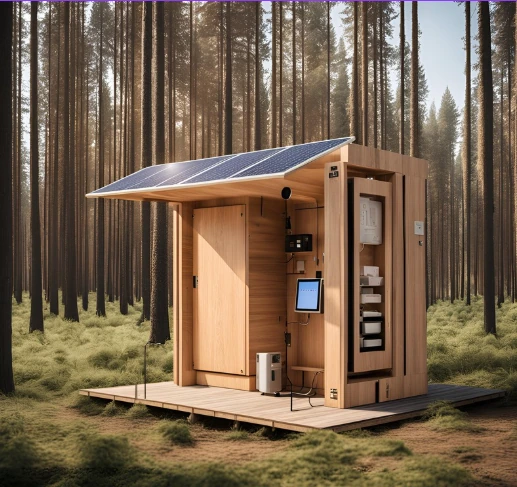
SUNSPECTRAMarTechCustomer ExperienceCampaign TrackingPower BI
Designed and implemented a scalable tracking framework connecting social media campaigns, customer interactions, orders, and revenue.
Transformed fragmented marketing data into measurable KPIs and actionable business insights.
Power BIDashboarding
Power QueryData cleaning
Google SheetsCampaign tracking
Short.ioLink tracking
Instagram / MetaCampaign data
WhatsApp BusinessCustomer interactions
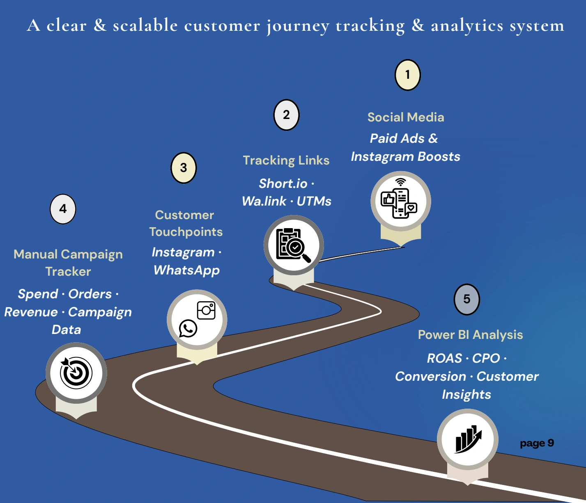
SUNSPECTRAMarketing Campaign AnalysisSocial Media StrategyKPI MeasurementsData Visualization
Five-week MVP testing period ·
June–July 2026
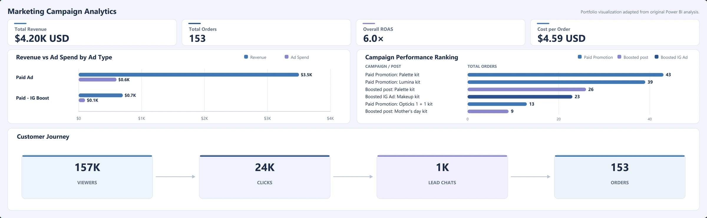
WhatsApp26.12%
Instagram10.17%
WhatsApp recorded approximately 2.6× Instagram's chat-to-order conversion rate during MVP testing.
Relative bar lengths: WhatsApp = 100% of the highest observed rate; Instagram = 38.9% of WhatsApp's rate.
MJUNIK TEXTILE · MUNICH, GERMANYCREATIVE WORK · PRODUCT PHOTOGRAPHY
Studio PhotographyGenerative AI · Product PresentationB2B E-CommerceVisual Merchandising
Product Photography · Image Preparation · Digital Merchandising · E-commerce Content
STUDIO QUALITY MERCHANDISE PHOTOGRAPHS FOR B2B WHOLESALE
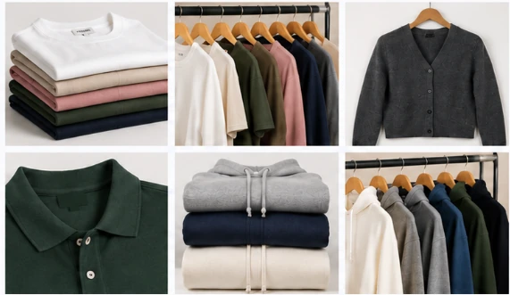
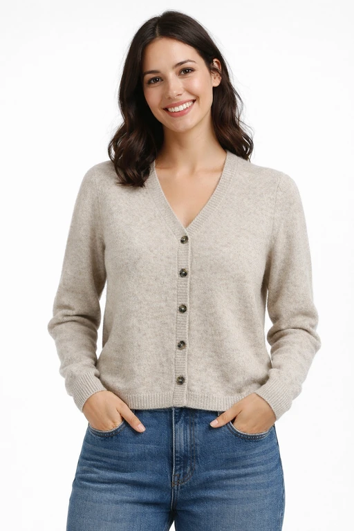
Produced 200+ studio-quality merchandise photographs and prepared AI-assisted merchandise visuals to support product presentation and the launch of Mjunik Textile's B2B wholesale webshop for customers across the DACH market.
200+PRODUCT PHOTOGRAPHS
200+VISUAL ASSETS
100+AI MODEL & LIFESTYLE VISUALS
MJUNIK TEXTILE · MUNICH, GERMANYCREATIVE WORK · AI-ASSISTED VISUAL PRODUCTION
Studio PhotographyGenerative AI · Product PresentationB2B E-CommerceVisual Merchandising
AI-ASSISTED VISUAL PRODUCTION
Created AI-generated lifestyle visuals, product presentations and artworks to enhance product storytelling and support the launch of Mjunik Textile’s B2B wholesale webshop.
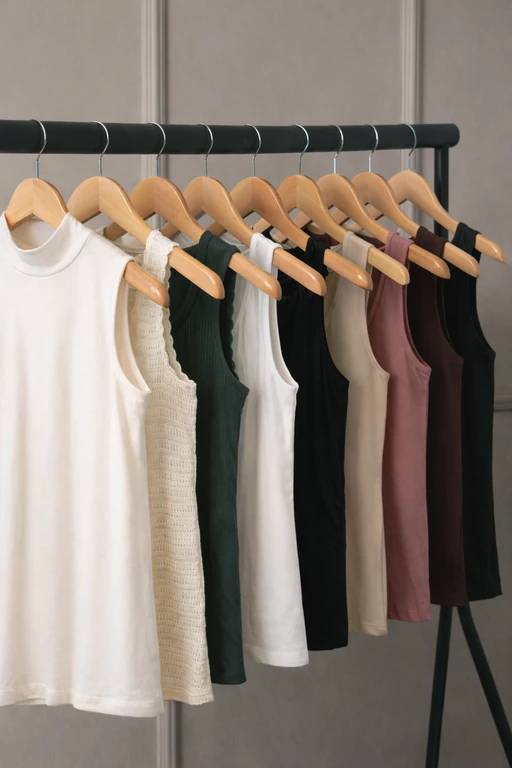
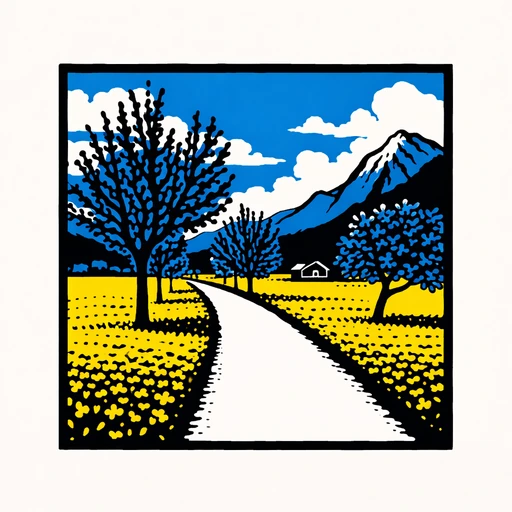
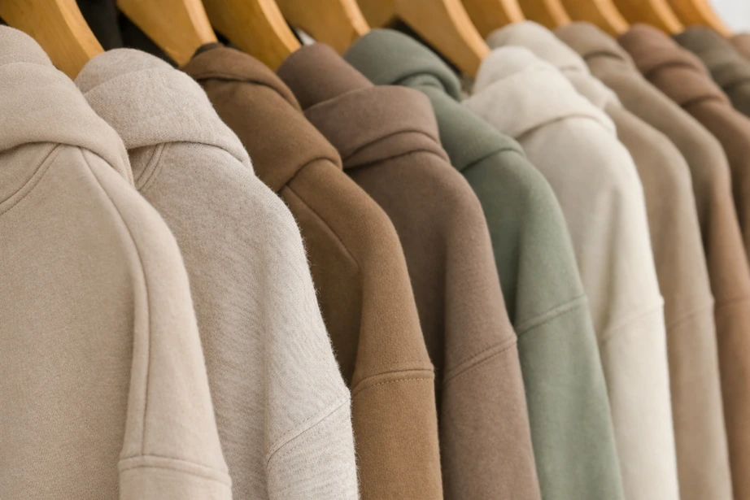
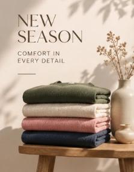
MJUNIK TEXTILE · MUNICH, GERMANYCREATIVE WORK · NEWSLETTERS & E-COMMERCE COMMUNICATION
Studio PhotographyGenerative AI · Product PresentationB2B E-CommerceVisual Merchandising
AI-ASSISTED FASHION VISUALS
Created newsletters for the launch of seasonal collections using AI-generated model visuals based on original product photographs. Combined real product assets with AI-assisted fashion imagery to create cohesive, brand-aligned marketing content for the B2B DACH market.
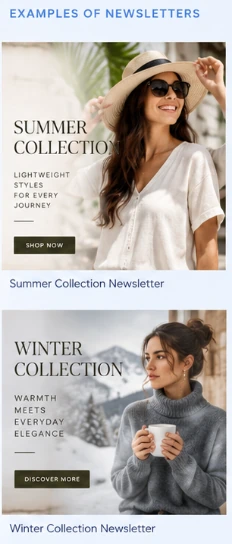
KU WINTER SCHOOL | MEDIA TEAM MEMBERInterviewsPhotographyVideography
Contributed to the Winter School 2025 Media Team, supporting visual storytelling and communication during an international Erasmus+ learning programme.
Documented activities through photography, videography, and interviews while collaborating with participants from different European countries.
Photography · Videography · Interviews · Event Documentation · Visual Communication
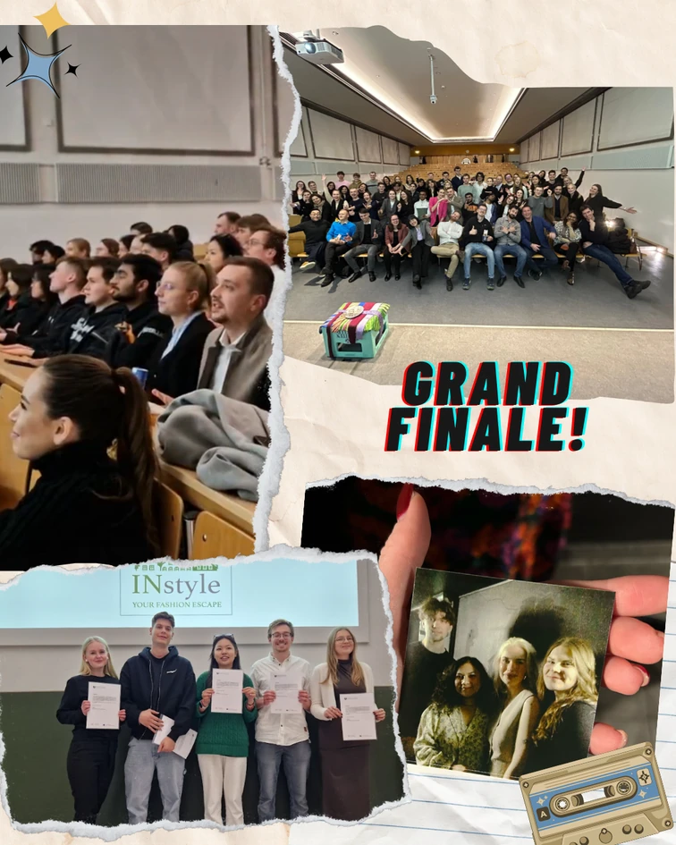
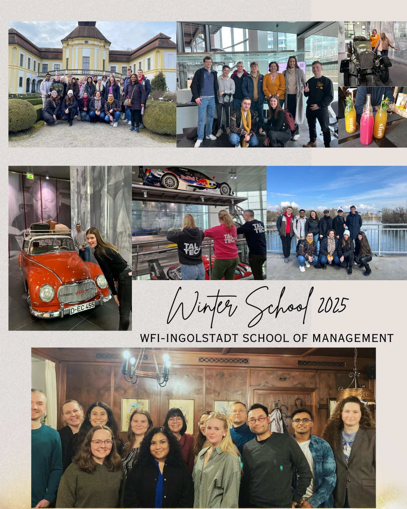
MarTechMarketingInnovationDigital Customer Experience